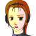

ザカリア 「おっさん、よせェッッッ！ そいつは敵じゃないッッ！！ そいつは・・・」
ザカリア 「おっさん、よせェッッッ！ そいつは敵じゃないッッ！！ そいつは・・・」
 ミア 「・・・なに・・・、なによ、アレ・・・」
ミア 「・・・なに・・・、なによ、アレ・・・」
ザカリア 「あ・・・あ・・・」
ミア 「・・・何の、冗談よ・・・」
 ギルバート 「エナが・・・沈ん・・・だ？ ・・・だと？」
ギルバート 「エナが・・・沈ん・・・だ？ ・・・だと？」
 ミア 「エナああぁぁぁぁぁああああぁぁぁぁぁああっ！ いやだああぁぁぁああぁぁぁぁぁぁ！ いやぁぁだあああああぁぁぁぁぁぁぁぁああああああっ！」
ミア 「エナああぁぁぁぁぁああああぁぁぁぁぁああっ！ いやだああぁぁぁああぁぁぁぁぁぁ！ いやぁぁだあああああぁぁぁぁぁぁぁぁああああああっ！」
ザカリア 「・・・遅かっ・・・」
ミア 「ぁぁあああああぁぁぁああぁぁぁぁぁああああああっ！」
ザカリア 「よせッ！ ミア！ あのおっさんは尋常じゃねえッ！ お前まで落とされるぞッ！」
ミア 「うわああああああッ！あああッ！放せえッ！あいつ！やってやるッ！あいつッ！あいつッ！あいつ！あああああああッ」
ザカリアのビハインドのワイヤーが、ミアをつなぎ止める。
ミア 「わあああああッ放せッ！放せよッ！あいつブッ殺してやるんだからあッ！」
ナレーション 「体制勢力、議会・セグメント連合と、反体制勢力、エクレシアの戦いは、膠着状態に入っていた。それは、その陰に潜むユニオンの仕組んだ戦争に他ならない。アベルは、ユニオンに利用されていた真実を知り、ユニオンと戦う決意をする」
「だが、戦場で戦うのは、戦いを引き起こす者ではなく、戦争を終わらせたいと願う、一介の兵士たちなのだ」
タイトル
|
− War without a face − |
デッキ。
内線電話でボッシュと会話するケネス。それを見守るアベルとハインツ。
 ケネス 「ほいほい、了解した。・・・３０分？ 充分だ。・・・ああ、わかってる。じゃァな」
ケネス 「ほいほい、了解した。・・・３０分？ 充分だ。・・・ああ、わかってる。じゃァな」
ケネス 「・・・さァて、と。準備と覚悟はイイか？ ２人とも」
 ハインツ 「ひょっとして、ビンゴ？」
ハインツ 「ひょっとして、ビンゴ？」
ケネス 「ああ。ボッシュが、配置してたフロートにやっこさんが掛かったってよ。３０分もしないうちに、当たりを付けて、追撃が始まるだろうぜ」
 アベル 「フロートって事は、後方の敵が先に来たんですね」
アベル 「フロートって事は、後方の敵が先に来たんですね」
ケネス 「ああ。もっとも、後方だけじゃないだろうな。前方にも必ず、敵の網は待ってる。こっちの突破のためにも、追撃隊へ向けて艦の回頭は出来ない」
ハインツ 「艦の主砲はアテにせず、俺達だけで戦えって事ね」
ケネス 「そう言うコト。だけど、マトリックス一隻と比べりゃ、あきらかにＧの方が強力なんだ。心配する事ァねえさ」
アベル 「追ってきてるのがオデッセイアなら、火力はそこまで高くないはずです。むしろ、警戒しなきゃいけないのは敵のマシンの方ですね」
ハインツ 「また、あのピカピカ野郎が来るかもな・・・」
ケネス 「だから、覚悟と準備、怠るなよ。ここを抜けても、前には敵がいる。連戦の可能性もあるんだからな」
アベル 「はい・・・！」
戦闘が終わり、クーデターを掌握したエドガーとギルバートが対面する。
地面には、エナのものと思われる死体に、シートが被せてある。
ミア 「こいつかあああッ」
ザカリア 「よせ、ミア！ 落ち着けッ」
ミア 「放せッ！ 放せよザカリア！ アイツだけはブッ殺してやるんだ！ ブッ殺して・・・！ わあああああッ」
 エドガー 「・・・ふン。嬢ちゃんは、ああ言ってるぜ」
エドガー 「・・・ふン。嬢ちゃんは、ああ言ってるぜ」
ギルバート 「くっ・・・！ そちらも任務だった事は承知した。作戦内での致し方ない誤認である事も・・・、く・・・」
ミア 「お前があァ！！」
ザカリア 「ミア、よせ！」
エドガー 「・・・嬢ちゃん、気に入らないなら、いつでも掛かってくればいい。今でもな。戦場ってのは、そういうトコロだ」
ミア 「殺す！ 必ずブッ殺してやるからな！オマエェ！」
ギルバート 「あなたもユニオンからの指示で動いていたのなら、事後の処理については何か・・・」
エドガー 「俺は造反を叩きつぶすように言われただけだ。事務仕事向きじゃねえのは、見りゃぁわかるだろ。任せるぜ。・・・行くぞ、小僧。出来るだけ早く本隊に合流する」
ザカリア 「あ、ああ。・・・あんた、ミアを頼む。・・・ミア、頼むから、今は、頼む・・・。大人しくしててくれ」
ミア 「くそおぉぉぉッッ！必ずブッ殺すからな！」
エドガー 「待ってるぜ」
ギルバート 「ミア、暴れるんじゃない・・・！ 俺は・・・」
ミア 「うわあああああああああっ！」
デッキにて、携帯食料を配るアンと、携帯飲料を用意するシャヒーナ。
 アン 「はい、レション。・・・アベルも」
アン 「はい、レション。・・・アベルも」
アベル 「ありがとう」
ハインツ 「さんきゅ。行ってくるぜ、スナン」
アン 「ケネス！ 気を付けてね！」
ケネス 「さんきゅ」
ハインツ 「・・・俺は、気を付けなくたって平気だからな、うん」
出撃する３機を見送るアンとシャヒーナ。
アン 「・・・ふう」
アン 「アベルが心配？」
 シャヒーナ 「・・・人並みには」
シャヒーナ 「・・・人並みには」
アン 「素直じゃないわね」
シャヒーナ 「そうでもないわ。心配して、結果が変わるならともかく」
アン 「馬鹿ね」
シャヒーナ 「そうね。・・・でも、気持ちが強くなるほど、失った時につらくなるから」
アン 「まあ、いいわ。・・・だけど、失ってから気付いても遅いわよ」
シャヒーナ 「大丈夫。感情を完全にコントロールできるほど強い人間じゃないから」
アン 「あんたって、・・・掴めないわね」
シャヒーナ 「そうしてるもの」
アン 「馬鹿ね」
シャヒーナ 「そうね」
司令塔と思われる部屋。
クーデターは完全に掌握されたらしく、幾人もの兵士がギルバートの指示に従っている。
その部屋の中で、フォルビシュ中将が、椅子にくくりつけられている。
ギルバート 「・・・では、フォルビシュ中将。議会軍に対し、バルバロイと手を組んで造反した罪で、あなたを逮捕・議会軍へと連行いたします。よろしいですね？」
 フォルビシュ 「この造反もユニオンが仕組んだ事じゃないか！ 私は命令に従っただけだ！」
フォルビシュ 「この造反もユニオンが仕組んだ事じゃないか！ 私は命令に従っただけだ！」
ギルバート 「部下たちの見ている前で、そんな立派な台詞を吐くとは思いませんでしたよ、フォルビシュ中将・・・。あなたに・・・、議会軍軍人としてのプライドは残っていないのか・・・」
フォルビシュ 「俺は議会軍軍人だ！ ユニオンの構成員じゃない！ だが、上層部は皆知ってる！ ユニオンには逆らえんのだ！ 絶対にな！」
ギルバート 「いいでしょう・・・。弁明を聞きましょう。時間なら・・・、たっぷりあります」
デッキ。各人コックピットの中。
 イヴリン 「いよいよ、か。長官の進退も掛かってる事だし、ここが正念場・・・」
イヴリン 「いよいよ、か。長官の進退も掛かってる事だし、ここが正念場・・・」

放送 「敵のマシン３機を抑えれば、本艦は対艦戦闘で攻撃に入ります。各機、出撃スタンバイお願いします」
イヴリン 「・・・各機、出撃スタンバイ！」
 カイン 「はいはい、行かせてもらいますよ。補給のお礼はしなきゃね」
カイン 「はいはい、行かせてもらいますよ。補給のお礼はしなきゃね」
イヴリン 「無駄口叩いてないで、出なさいよ。後がつかえるわ」
カイン 「おお、怖。綺麗なお姉さんが台無しだ。この艦、綺麗な人が揃ってるのに、皆おっかないんだもんな」
イヴリン 「もう一度言うわ。無駄口叩いてないで、とっとと出なさい」
カイン 「・・・アサルト、出るよ」
イヴリン 「アベルよりイケ好かないガキだわ・・・。あなたも出撃よ」
 少女 「はい」
少女 「はい」
イヴリン 「・・・クロスボウ、出ます！」
少女 「・・・ザンクα、出ます」
椅子にくくりつけられたフォルビシュと、その前に立つギルバート。
フォルビシュ 「わかったか？ 本件に関しては、上にさえ問い合わせてくれれば、私の無実は証明される・・・」
ギルバート 「つまり、自分も中将も、ユニオン内の派閥争いに利用されただけだと？ ミア、中将の言ってることは本当か？」
ミア 「・・・イブレイって男がいるのはホントだ・・・。命令のことは知らない・・・」
フォルビシュ 「問い合わせてくれれば、誤解はすぐに解ける」
ギルバート 「誤解・・・ですか」
フォルビシュ 「そうだ。命令書の行き違いによるちょっした誤解だ」
ギルバート 「・・・でも、そんなのを解く必要はありますか？」
フォルビシュ 「何・・・だと？ 貴様」
ギルバート 「あなたには引き続いて、クーデターを指揮してもらいます」
フォルビシュ 「なっ、貴様、どう言うことだ？」
ギルバート、椅子のフォルビシュをいきなり殴り飛ばす。
ギルバート 「お前にッ！ 貴様呼ばわりされる憶えはないッ！」
フォルビシュ 「ぐっ、がっ」
椅子にくくりつけられたままなので、倒れて起き上がれないフォルビシュ。
ギルバート 「・・・俺は、駒じゃ、ない・・・！」
フォルビシュ 「な、何のつもりだ・・・！？」
ギルバート 「俺達は、ユニオンのために命を懸けて戦ってる訳じゃない・・・！ そんな事のために、先輩たちが・・・、少佐が・・・、エナが死んでいった訳じゃないッ！」
ミア 「ギルバート・・・？」
フォルビシュ 「しょ、正気か？ 議会軍も、バルバロイも、もとを辿っていけば所詮はユニオンの出先機関に過ぎないんだぞ？」
ギルバート 「だから何なんです？ 背くというならば、撃つまでです。簡単じゃないですか。・・・どうするんです？ 保身が大好きなフォルビシュ中将」
フォルビシュ 「わ・・・、わかった・・・」

アイキャッチ「Ｇ−ＧＵＩＬＴＹ」
宇宙空間。クロスボウ、ザンクα、アサルトの３機。
イヴリン 「行くわよ。・・・指示したフォーメーション通りに展開して！」
少女 「はい」
カイン 「はいはい」
イヴリン 「・・・ふン」
イヴリン 「カイン！ アサルト出遅れてるわよ！ 切り崩し役なんだから遅れないで！」
カイン 「おっかしいなァ。整備不良みたいだ。出力が上がらないよ」
イヴリン 「アンタ・・・！ まさか！」
カイン 「言ってるだろ。・・・整備不良って」
イヴリン 「・・・最初ッから、そういうつもりだったのね・・・！」
カイン 「何のことさ」
イヴリン 「いいわ。アンタはそこで引き籠もってなさい」
カイン 「ひゅー、おっかないなァ。ホントに整備不良なのにさ」
そう言ったカインの手に、小さい機械のパーツがある。
カイン 「もっとも、・・・僕がやったんだけどね」
アサルトを置いて、クロスボウとザンクαが先行する。
イヴリン 「あのガキ！ ・・・散々泣かしてあげるわよ・・・！ 良い子ちゃんも嫌いだけど、こまっしゃくれたガキも大概ね！」
イヴリン 「いい！？ アサルトの奇襲から一気に殲滅を掛ける作戦は中止よ。挑発して、後退しながらアサルトの位置まで。・・・いいわね」
少女 「・・・はい」
イヴリン 「来たわよ」
少女 「ＪＡＣ展開。フォーメーション、Ｆ−１１」
迎え撃つソードケイン、サイファー、ヴォーテックス。
ケネス 「おいでなすったぜ。気ィ引き締めな」
アベル 「クロスボウ・・・！ イヴリンさんか！」
ハインツ 「へへっ、ピカピカがいないなら楽勝だぜ！」
ケネス 「アイツの速度は尋常じゃない。潜んでる可能性もある。油断するな」
ハインツ 「わかってるって！」
イヴリン 「・・・ヴォーテックス・・・。誰が乗ってるか知らないけど、返して貰うわよ！！」
ケネス 「背後のデカブツは正体不明だ。気を付けろ！ ＪＡＣを積んでる！」
アベル 「はい！」
イヴリン 「２対３に加えて、相手がアベルとケネスじゃ、有利とは言い難いわね。・・・牽制しつつ後退！ 連中を近寄せちゃ駄目よ！」
少女 「はい」
ザンクαから射出されるＪＡＣがアベルの攻撃を回避する。
アベル 「くっ！ このＪＡＣ、機動性が高い！」
ケネス 「落ち着け！ ＪＡＣなら本体をやればいい。お前はＪＡＣに構うな！ ハインツ、一掃できるか！？」
ハインツ 「言われなくても！」
ヴォーテックスが広域に粒子砲を放つが、その攻撃さえも回避する。
ハインツ 「・・・回避したァ！？ 反応が早い！」
ケネス 「慌てるなハインツ！ 奴ら、ジリジリと後退してる！ 罠って可能性はある！ 突っ込むなよ。迎撃に徹するんだ！」
イヴリン 「ちッ！ 乗らないか！ なら、やるわよ！ 攻撃開始！」
少女 「・・・はい。ＲＩＰＳ、フォーメーションＢ−０７、行って！」
ザンクαから、大量のＪＡＣ。
アベル 「うわっ！ 数もスピードも・・・！」
ケネス 「ハインツ、援護しろ！ 俺がＪＡＣを牽制する！ アベル、突っ込めるか！？」
アベル 「やります！」
イヴリン 「近付かせないわよ！ こっちは二機ともインファイトには弱いんだから・・・！ いいわね！ 少しずつ後退しなさい！」
少女 「はい」
アベル 「こうも攻撃が厚くっちゃ、近付けないよ！」
目視範囲に前方の戦闘を眺めるカイン。
カイン 「・・・やれやれ、参ったな。お姉さんったら、わざわざ後退してきたの？ 何だか執念深いなァ」
ケネス、アベルが、アサルトの存在に気付く。
ケネス 「はン。やっぱりもう一機か・・・」
アベル 「３対３だと、ＪＡＣがある分だけ、向こうに有利です！ 連携を分断させましょう！」
ケネス 「了解！ ハインツ！ クロスボウを抑えろ！ アベル、ＪＡＣ野郎を抑えられるか！？ 俺が一気に突っ込む！」
アベル 「了解です！」
ケネス 「行くぜッ！」
少女 「防いで」
突進するケネス。迎撃するザンクαのＪＡＣ。それを撃ち落としていくアベル。
だが、それでもケネスはかなりの攻撃を受ける。
アベル 「ケネスさん！」
ケネス 「ちっ！ だけどな、こっちは多少のダメージぐらいじゃ退けねェんだよ！」
それでも止まらないケネス。
少女 「あ・・・！ 止まらないの？ 何で？」
動揺する少女。だが、サイファーが抜きざまに攻撃するものの、これはザンクのアームに止められる。
ケネス 「くっ！？ さすがに攻撃まではさせてくれねェか！」
その先から、アサルトが来る。
カイン 「・・・参ったな。ＤＲＥＳＳが動かないのはホントなのに・・・」
ケネス 「相手して貰うぜッ」
カイン 「ま。いいよ。ディバイダーがあれば充分・・・！」
ケネス 「おっ、今回は光らないのかい」
カイン 「あっは！ むしろ、ＤＲＥＳＳナシの方が、パイロットの力が発揮されるってね」
戦場は各機が１対１に持ち込まれる。
イヴリン 「くっ、見事に分断してくれたわねっ！ あたしの機体！ 返して貰うわよ！」
ハインツ 「火力自体は・・・、あっちが上か！？ 畜生ッ！」
ソードケインｖｓザンク。
アベル 「・・・！ なに！？ この感触！？」
少女 「クローズ。Ｄ−１６で展開」
アベル 「すごく・・・、嫌な感じだ！」
少女 「攻撃。離脱。避けて」
アベル 「何だか・・・、気持ち悪い・・・。駄目だ。戦闘に集中しなくちゃ・・・！」
少女 「・・・続けて。・・・攻撃」
アベル 「やめてよ！ この・・・！」
クロスボウｖｓヴォーテックス。
ハインツ 「何とか・・・」
イヴリン 「落とす！」
ディバイダー１つに翻弄されるサイファー。
カイン 「やるね、コイツ」
ケネス 「こいつッ・・・、アベル並に・・・！」
アベル 「懐にさえ入ればッ！！」
少女 「きゃ、・・・アーム展開。ＲＩＰＳ、近距離戦フォーメーション」
何とかＪＡＣを避けて近付くアベルだが、近付くとアームが阻止する。
接触の際、少女の声がアベルの耳に届く。動揺しながらも、攻撃を続けるアベル。
アベル 「な、なに！？」
少女 「アーム、・・・守って」
再び届く少女の声。
アベル 「今の・・・声・・・」
少女 「距離を取って。ＲＩＰＳも。すぐに展開できるように」
今度は確実に耳に入る。
アベル 「ユー・・・ニス？ まさか・・・」
少女 「・・・いやな気分・・・。アーム・・・敵を引き離すの。・・・お願い」
アベル 「くっ、わああっ！」
少女 「やっ！ 近寄らないで！ いやッ！」
少女の波長も乱れ出したのか、ＪＡＣの動きが鈍る。
アベル 「！！ ユーニスの・・・」
少女 「来ないで！」
アベル 「・・・ユーニスの声まで使って・・・、あなたたちは・・・グレイゾンは・・・」
少女 「なに・・・？ 嫌な感触・・・」
アベル 「あなたたちは・・・そこまでするんですかっ！」
アベル、次々とＪＡＣを撃墜。ザンクに向かって突進する。
少女 「なに！？ いや！ ＲＩＰＳ！」
アベル 「そんな汚いやり方で！ だから僕は！ 動揺なんか！」
少女 「やだ・・・とめなきゃ・・・！」
アベル 「うわあああああっ！」
少女 「あ・・・！！」

ナレーション 「立ちふさがる敵、ザンクαを、アベルは果たして撃退することが出来るのか。そして、その影で笑うカインと、ケーラーの目的が明らかになる。 次回、『夢のような世界』 Ｇの鼓動が、今目覚める」